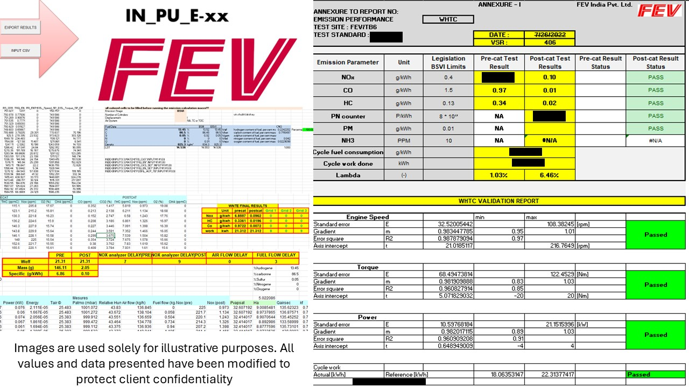

Developed a macro-based tool in Excel using VBA to automate emission cycle test reporting for commercial diesel engines.
Emission Testing Automation for Commercial Diesel Engines
Overview
As a Project Engineer at FEV India, I led the development of an Excel-based VBA automation tool that optimized emission test reporting for commercial diesel engines. I also successfully managed multiple client projects across domains such as calibration, diagnostics, and validation—coordinating with a team of 6 - 7 engineers and ensuring timely project delivery with high technical accuracy.
This tool streamlined emission cycle data processing by integrating physics-based models and regulatory algorithms into a user-friendly macro interface, reducing manual effort and ensuring data consistency across testing facilities.
Cycle Time Reduction & Workflow Automation
By auditing the legacy manual workflow, I identified repetitive and error-prone steps in emission reporting. Using advanced Excel VBA scripting, I created a solution that:
- Reduced report generation time by ~40%
- Automatically validated and calculated key parameters (g/kWh, exhaust flow, gas concentration)
- Standardized outputs for cross-client comparison and compliance reviews
Physics-Based Modeling in VBA
I implemented core formulas within the macro logic to convert:
- PPM to specific mass emissions (g/kWh)
- Volumetric and molar exhaust flow rate calculations
- Standard temperature and pressure corrections
These models ensured scientific accuracy while maintaining usability for test cell engineers.
Standardized Test Report Generation
The tool generated client-ready reports fully aligned with Euro-6, Bharat Stage VI, and internal FEV calibration protocols. Features included:
- Auto-generated visual charts and summaries
- Built-in sanity checks for data outliers
- Dynamic client-specific formatting modules
Team Leadership & Client Management
In my broader role, I led technical planning, task delegation, and troubleshooting across a team of 6 to 7 engineers, working directly with leading OEM clients including Cummins, Mahindra, and John Deere. My responsibilities included:
- Project scheduling and status tracking
- Functional coordination across emission, performance, and endurance testing teams
- Ensuring quality control and compliance in deliverables
Key Project Insights
Project Context
As a Project Engineer in the Automotive Research division at FEV India, I worked on emission testing and validation for commercial diesel engines. The project involved extensive use of high-precision diagnostic instruments including:
- FTIR (Fourier Transform Infrared Spectrometer)
- AVL Micro Soot Sensor
- Horiba MEXA Gas Analyzer
- AVL Smoke Meter, ATB Dynamometer, and CAN bus logging systems
These instruments generated large volumes of raw data during real-time testing in the engine test bed environment, which required extensive post-processing for compliance, calibration, and client reporting.
Problem Identified
During cross-project involvement with multiple OEMs, I observed a systematic delay in the report generation process, which affected response time and delivery commitments. The traditional reporting workflow involved:
- Manual data import: Copy-pasting ~18,000 rows from .csv files exported from various test instruments.
- PPM-to-specific-mass conversion: Using external calculators or scripts for converting gas concentrations from PPM to g/kWh, often device-specific.
- Validation checks: Ensuring engine speed and dyno speed were within regulatory limits; confirming data acquisition quality (signal dropout, spikes, etc.)
- Final compilation: Consolidating all cleaned, validated, and calculated data into a client-compliant Excel report.
📌 Tools used: 3 different standalone platforms (manual workflow)
My Initiative: Automation with VBA Macro Tool
To address this inefficiency, I initiated and developed an advanced macro tool using Excel VBA that automated the entire post-processing pipeline:
- Step1: Auto-imported CSV data (~18,000 rows) from multiple instruments
- Step2: Embedded validated physical equations for real-time PPM to g/kWh conversion
- Step3: Ran logic-based validation to compare measured dyno and engine RPM against acceptable deviation thresholds
- Step4: Conducted signal checks for flatlining, dropout, and anomalies
- Step5: Auto-generated a formatted, client-ready report with graphs, summaries, and compliance flags
Impact & Results
| Before(Manual) | After(Automated Macro Tool) |
|---|---|
| ~30 minutes to generate 1 report | ≤ 2 minutes to generate report |
| Data pulled from 3 separate tools | One-click consolidated processing |
| Risk of human error and inconsistency | Standardized output and validation |
| PPM conversion done using 3rd party | In-tool validated mass conversion |
| Repetitive, non-scalable manual effort | Reusable, scalable across projects |
Images of Implementation and Solution

Conclusion
Through my initiative, I transformed a multi-step, 30-minute manual task into a 2-minute automated operation—saving hours across multiple testing campaigns. This innovation not only increased productivity but also improved data integrity and client satisfaction. The tool was adopted across FEV's test cells and is now used in multiple ongoing client projects, supporting precision diagnostics, regulatory reporting, and rapid calibration feedback.